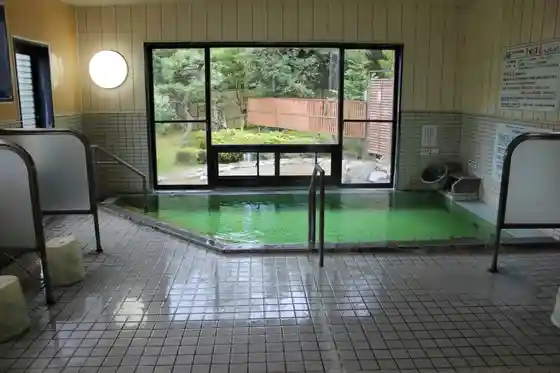
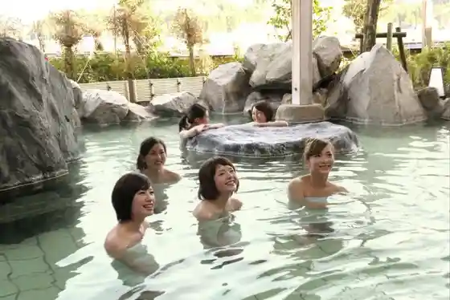
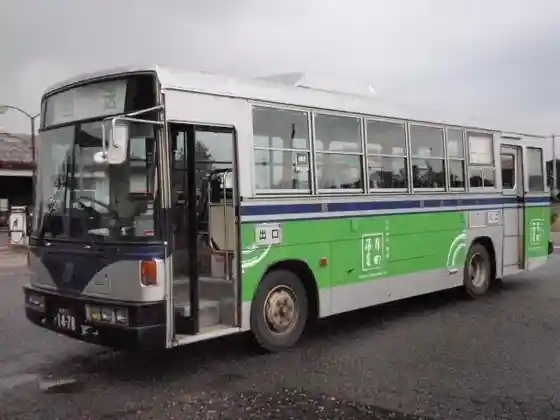
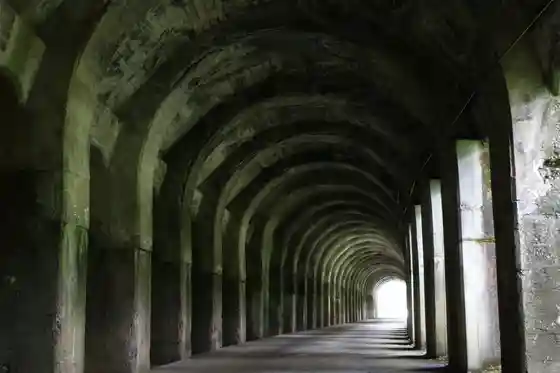

Kyodo Bath (Bijin no Izumi)
Shibata, Niigata · 0254-32-1365 · Official / source link

Tsukioka Onsen
Shibata, Niigata · 0254-32-2975 · Official / source link

Shibata Shiro Shibata Castle Park
Shibata, Niigata · 0254-22-3101 · Official / source link
Tsukioka Onsen Chokko Basu
Shibata, Niigata · 0254-26-6789 · Official / source link

Higashi Akaya Renzoku Domon
Shibata, Niigata · 0254-28-9960 · Official / source link

Shimizu Sono
Shibata, Niigata · 0254-22-2659 · Official / source link
Shibata Onsen (Ayame Baths)
Shibata, Niigata · 0254-26-1173 · Official / source link
Hyakka Village (Shiroyama Onsen)
Shibata, Niigata · 0254-21-2626 · Official / source link
Fujitsuka Hama Beach
Shibata, Niigata · 0254-28-9960 · Official / source link
Niigata Jizake premium SAKE Kura
Shibata, Niigata · 0254-32-3151 · Official / source link
Sugaya Fudo Mikoto
Shibata, Niigata · 0254-29-2022 · Official / source link
Tsukioka Karion Park
Shibata, Niigata · 0254-28-9960 · Official / source link
Kikusui Shuzo (Kabu) / Kikusui Nihonshu Bunka Kenkyusho
Shibata, Niigata · 0120-23-0101 · Official / source link
Ichijima Tei
Shibata, Niigata · 0254-32-2555 · Official / source link
Suwa Shrine
Shibata, Niigata · 0254-22-2339 · Official / source link
Izumino Park
Shibata, Niigata · 0254-28-7099 · Official / source link
Gatsu Akari no Niwa
Shibata, Niigata · 0254-32-3151 · Official / source link
Tsurugi Ryu Kyo Campground
Shibata, Niigata · 0254-28-9960 · Official / source link
Shinso Yu Onsen (Shiun no Sato)
Shibata, Niigata · 0254-41-1126 · Official / source link
O Mon Shuzo (Kabu) / Experience Kata Shuzo Resort Gokai Hishi
Shibata, Niigata · 0254-22-5150 · Official / source link
Fukiya Koji Memorial Museum
Shibata, Niigata · 0254-23-1013 · Official / source link
Niigata Prefectural Shiunji Memorial Park Oto Campground
Shibata, Niigata · 0254-41-1010 · Official / source link
Otomo Inari Oku no In
Shibata, Niigata · 0254-26-6789 · Official / source link
Ichijima Tei Hina Ningyo Tokubetsuten Ji
Shibata, Niigata · 0254-32-2555 · Official / source link
Te Tsukuri Garasu Kobo Biidoro
Shibata, Niigata · 0254-32-2707 · Official / source link
Ashigaru Nagaya
Shibata, Niigata · 0254-22-2659 · Official / source link
Token Densho Kan Amada Shoji Memorial Museum
Shibata, Niigata · 0254-32-1121 · Official / source link
Takiya Forest Park
Shibata, Niigata · 0254-28-2713 · Official / source link
Nio Kogami Sha Campground
Shibata, Niigata · 0254-25-2536 · Official / source link
Prefectural Shiunji Memorial Park
Shibata, Niigata · 0254-41-3740 · Official / source link
Susano Shrine
Shibata, Niigata · 0254-26-6789 · Official / source link
Arakawa Tsurugi Ryu Kyo Arakawa Tsurugi Ryu Kyo Tozanguchi
Shibata, Niigata · 0254-26-6789 · Official / source link
Omine Yama Tochi Taira Sakura Jurin
Shibata, Niigata · 0254-28-9960 · Official / source link
Kajikawa Chisui Memorial Park Kajikawa Tsutsumi Cherry Blossoms
Shibata, Niigata · 0254-28-9960 · Official / source link
Shibata no Echigo Hime Ichigo Ichie Meguri
Shibata, Niigata · 0254-33-3108 · Official / source link
Adoban Farm Shibata
Shibata, Niigata · 0254-24-0471 · Official / source link
Tera Town Tamari Eki
Shibata, Niigata · 0254-22-3101 · Official / source link
Tohoku Mingei Kan
Shibata, Niigata · 0254-28-5160 · Official / source link
Kurashima Farm
Shibata, Niigata · 0254-29-2789 · Official / source link
Omine Yamazakura Park
Shibata, Niigata · 0254-26-6789 · Official / source link
Horibe Yasube Taketsune Dozo
Shibata, Niigata · 0254-26-6789 · Official / source link
Niigata Chibutsu premium SELECTION Mune
Shibata, Niigata · 0254-32-3151 · Official / source link
Gensen no Mori
Shibata, Niigata · 0254-32-3151 · Official / source link
Kyu Kenchiji Kosha Memorial Museum
Shibata, Niigata · 0254-28-9960 · Official / source link
Nai no Kura Damu Mizumi
Shibata, Niigata · 0254-24-9381 · Official / source link
Izumino Ocha Ya
Shibata, Niigata · 0254-22-9534 · Official / source link
Hiru Ba Yama Hiru Ba Yama Tozanguchi
Shibata, Niigata · 0254-28-9960 · Official / source link
Chuho Gorufu Kurabu
Shibata, Niigata · 0254-32-1200 · Official / source link
Wakuwaku Farm Shibata Mise
Shibata, Niigata · 0254-26-8313 · Official / source link
Ichijima Tei
Shibata, Niigata · 0254-32-2555 · Official / source link
no Buruddogorufu Club
Shibata, Niigata · 0254-41-0210 · Official / source link
Dai Amagi Park
Shibata, Niigata · 0254-33-2433 · Official / source link
Kajikawa Chisui Dam
Shibata, Niigata · 0254-26-6789 · Official / source link
Omine Yama Terasawa Rindo Tozanguchi
Shibata, Niigata · 0254-28-9960 · Official / source link
Yaki Mineyama Takiya Tozanguchi
Shibata, Niigata · 0254-22-3101 · Official / source link
Kingyo Daiwa Dorei Etsuke Ke Experience
Shibata, Niigata · 0254-26-6789 · Official / source link
Yu Meguri Kigan (Yu Yumi Tegata)
Shibata, Niigata · 0254-32-3151 · Official / source link
Kingyo Daiwa
Shibata, Niigata · 0254-26-6789 · Official / source link
Gogaji Kagura
Shibata, Niigata · 0254-22-3101 · Official / source link
Foresutokantorii Kurabu
Shibata, Niigata · 0254-32-3333 · Official / source link
Rengyo Kaido
Shibata, Niigata · 0254-26-6789 · Official / source link
Ta Kai
Shibata, Niigata · 0254-26-6789 · Official / source link
Echigo Hime (Ichigo) (Shibata)
Shibata, Niigata · 0254-41-3121 · Official / source link
Nio Ko Gaku Ta Kai Tozanguchi
Shibata, Niigata · 0254-28-9960 · Official / source link
no Mbiri Kimama Ni Suijo Sanpo ! Shoshinshakangei no SUP Experience 60 Fun
Shibata, Niigata · 0254-28-8337 · Official / source link
Gokan De Manabu Tezukuri “ Omusubi ” to Mikaku Taiken Jugyo /KIKUSUI Kura GARDEN
Shibata, Niigata · 0120-23-0101 · Official / source link
So Kurayama So Kurayama Tozanguchi
Shibata, Niigata · 0254-28-9960 · Official / source link
Shiun Gorufu Kurabu
Shibata, Niigata · 0254-41-2471 · Official / source link
Ni no Kkususu no Park
Shibata, Niigata · 0254-29-3315 · Official / source link
Chotoku Tera
Shibata, Niigata · 0254-26-6789 · Official / source link
Oyako Sukiikyanpu 2024/ Ni no Kkususu no Park
Shibata, Niigata · 0254-29-3315 · Official / source link
Juniasukii Kyoshitsu 2024/ Ni no Kkususu no Park
Shibata, Niigata · 0254-29-3315 · Official / source link
Dai 2 Kai 2024 Sukii Tour Ressun Tsuki Chiimu Kaetsu in Ni no Kkusu (Higaeri)
Shibata, Niigata · 090-7281-5638 · Official / source link
Shiniasukiikyanpu 2024/ Ni no Kkususu no Park
Shibata, Niigata · 0254-29-3315 · Official / source link
Dai 1 Kai 2024 Sukii Tour Ressun Tsuki Chiimu Kaetsu in Ni no Kkusu (Higaeri)
Shibata, Niigata · 090-7281-5638 · Official / source link
Kanko Gaido to Meguru Shibata no Tabi
Shibata, Niigata · 0254-26-6789 · Official / source link
Autumn Leaves no Garden × Nihombunka “ Masa Na Niigata ” Mankitsu Higaeri Tabi Gardens in Fall Colors – Japanese Culture”Exquisite Niigata” Grand Tour
Shibata, Niigata · 025-248-1000 · Official / source link